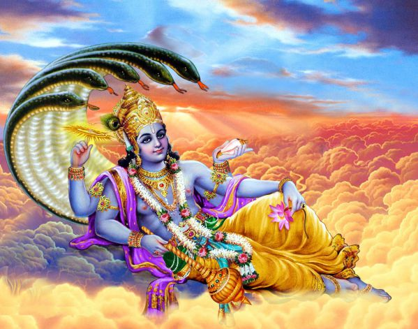
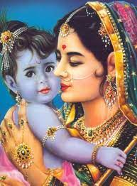
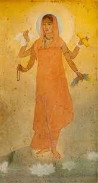

Tan Saung Daing Festival
The Tazaungdaing festival was observed in Burma (now officially called Myanmar) even before the spread of Buddhism.
It was held in honor of the God of Lights, and it marked the awakening of the Hindu god Vishnu from his long sleep.
Seeing that the Buddha would soon renunciate, the Buddha's mother, Maya, who had been reborn in the Tavatimsa heaven,
spent the entire night weaving yellow monk robes for him. Her sister Gotami (Buddha's aunt) continued this tradition and
offered new robes. The tradition commemorates a widely known story of the Buddha's life.The festival held on full moon day
of Thazaungmone, the end of the rainy season, a key moment in the Burmese calendar. |



|